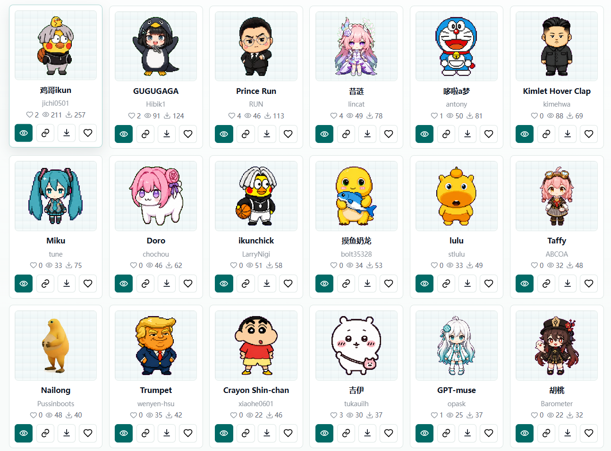
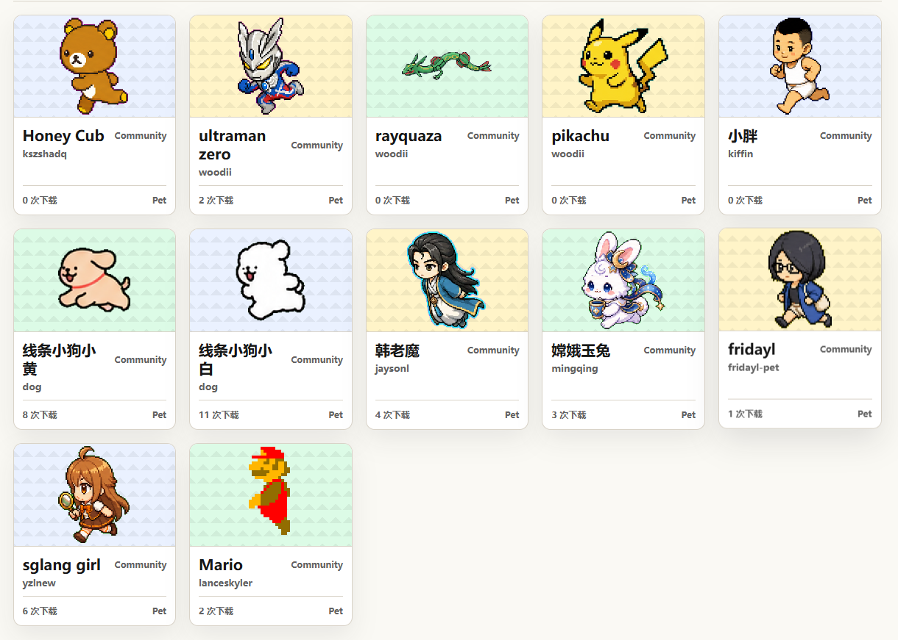
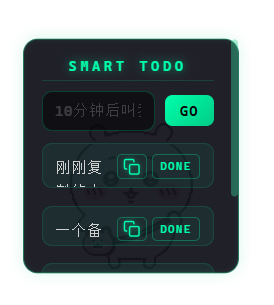
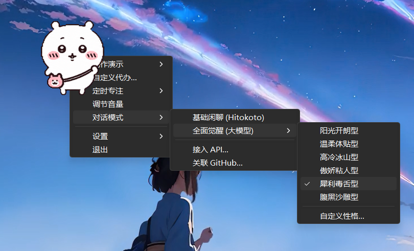

灵感来源于 Codex Pet，将其独立并赋予更多伴侣级桌面能力。
即便没有使用代码编辑器，也能拥有一只懂你的桌面宠物。
软件运行效果预览
不满足于默认形象？前往开源社区下载宠物压缩包，在 VibePet 中右键即可直接导入。
社区维护的宠物资源站，持续更新中

Codex Pet 原始项目社区

不只是一个桌面摆件，而是一整套轻量生产力工具。
自然语言自动解析倒计时，或者作为轻量级桌面记事本。

5 至 60 分钟自定义番茄钟，专注期间宠物保持安静，到点铃声提醒。

内置傲娇猫、毒舌朋友等六大基础人格。填入你的自定义 API Endpoint 与 Key，解锁大模型完全体。
基于 Windows 底层 WASAPI 峰值检测，随系统音乐跳动音符。
程序员专属彩蛋。绑定后，每次检测到新的 commit，宠物都会为你冒出鼓励语。
开机自启 / 状态持久化置顶 / 拖拽文件到宠物身上直接送入回收站。
七种内置动态动作，每一种都有独特的个性表达。
完全免费开源。大模型对话功能由于接入的是你自己的 API Key，所以取决于你使用的模型厂商资费（也完全可以使用免费的 API）。
暂不提供编译好的安装包。目前主打 Windows 体验，但由于基于 Tauri 框架，你可以克隆源码自行在 Mac 下编译运行。
在网页上方前往开源社区下载 .zip 格式的宠物包，右键点击桌面上的宠物，进入设置，导入宠物即可。